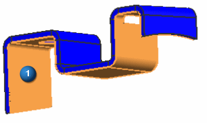
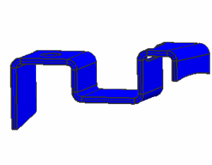

Create a midsurface using tangent faces
The Midsurface by Face Pairs dialog box is still open from the previous step.
-
Face Rule
Tangent Faces

-


All 14 surfaces that make up the top side of the part are selected because of their tangent relationship to each other.
-
Face (Select Side 2 Face)
-
Face Rule
Tangent Faces
-

-
 Create Face Pair
Create Face Pair -
The midsurface is created through the entire model using the single midsurface pair that contains all top and bottom surfaces in a single pair.
-

-
Using the steps you learned previously, delete the midsurface pair so that you can use automatic creation.
Leave the Midsurface by Face Pairs dialog box open for the next step.